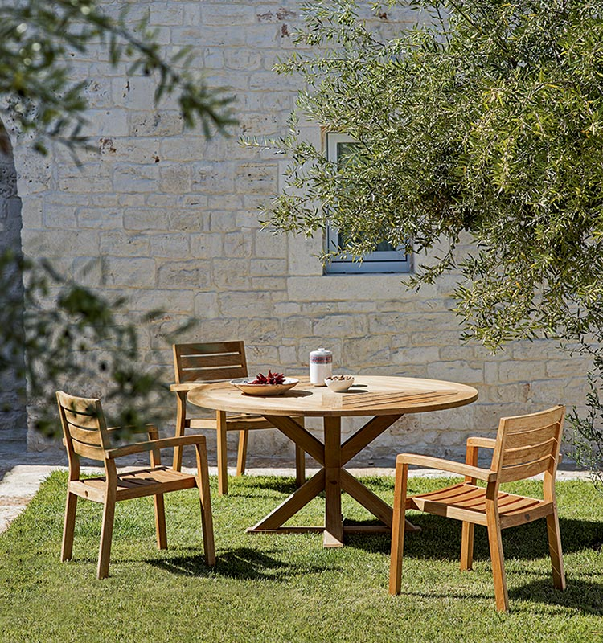

Jardín
Un verdadero remanso de paz, íntimo y personal. Dormir, soñar, relajarse... una habitación refugio que debe amueblarse con esmero: encanto natural, auténtico, bohemio, industrial o contemporáneo, aquí está lo que necesita para crear el dormitorio de sus sueños.

Mesas

Sillas

Consolas tv

Vajilleros

Espejos

Decoración
Los más recomendados - Jardín


Nuestros compromisos
En Deepwood siempre hemos pensado en verde, por ello desde 2008 ofrecemos muebles de madera maciza diseñados para durar. Mientras que hoy en día muchas empresas afirman que sus productos son sostenibles, a veces de forma vaga o sin demostrarlo, nosotros nos mantenemos fieles a nuestros valores, ofreciendo información con sobriedad y transparencia.
- ✔️Montaje tradicional
- ✔️Muebles de madera maciza
- ✔️Muebles montados
- ✔️Diseñados para durar